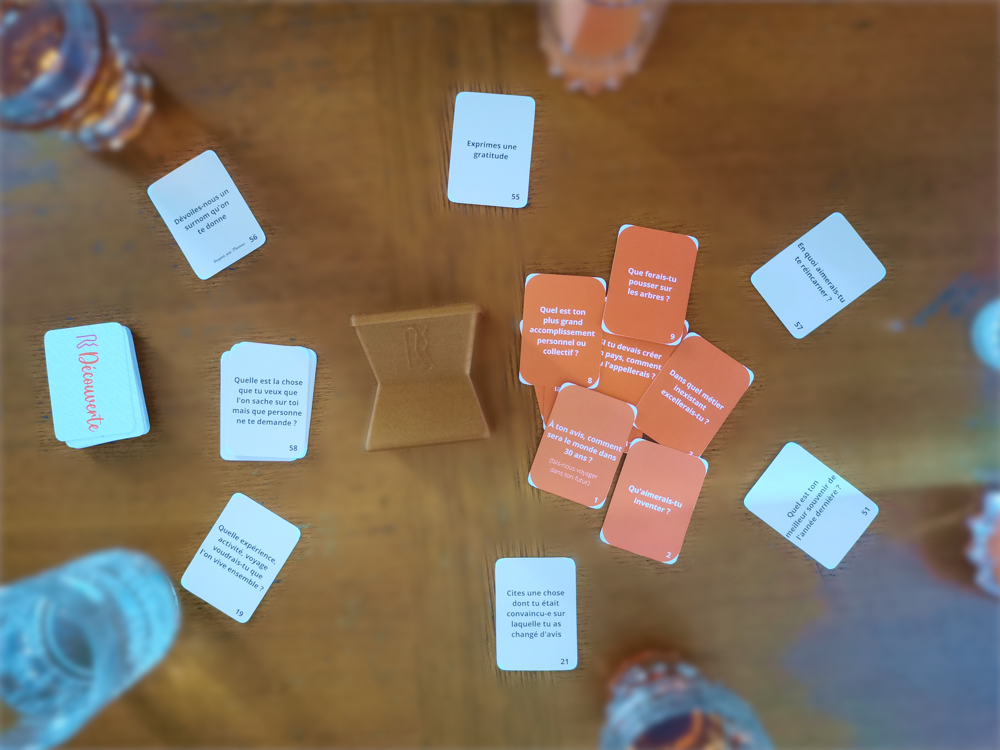
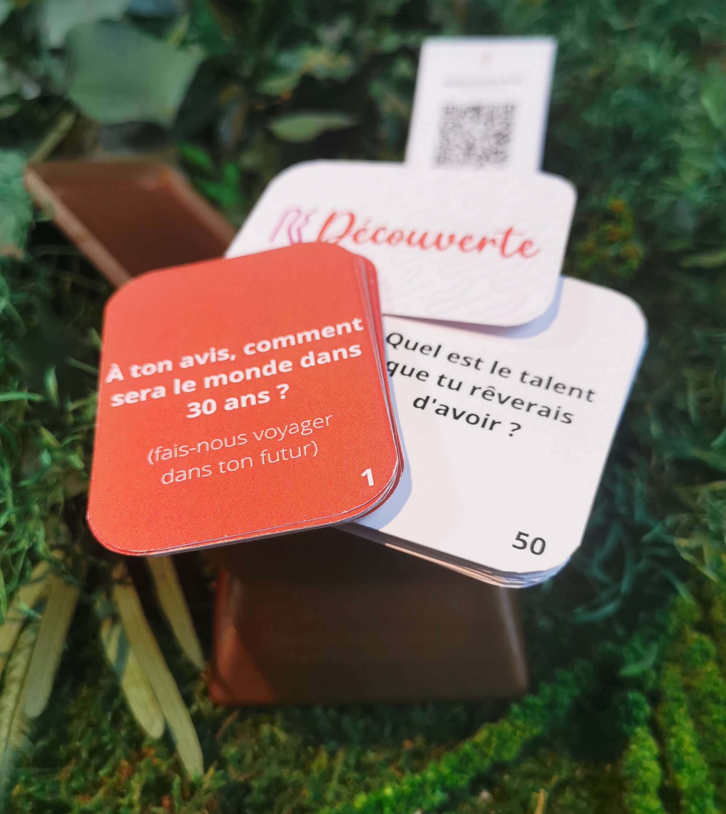
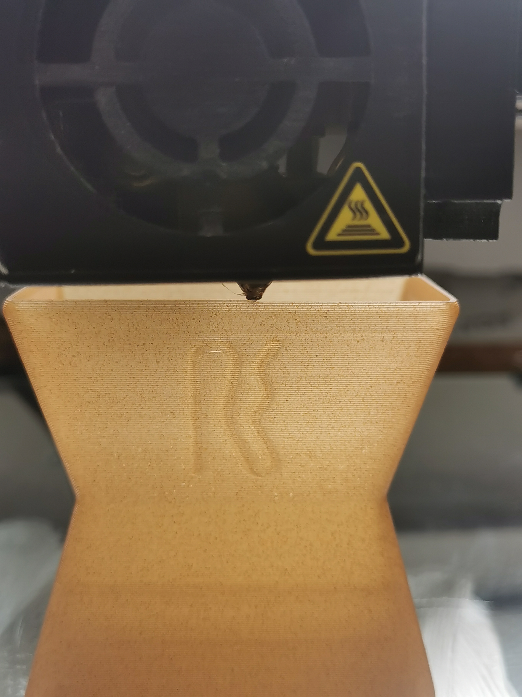

Edition limitée Beta 2023 : 16 / 100
Obtenir la première édition

12 cartes "Ambiance"
Une playlist dédiée
48 autres questions + actions
Un seul but, se redécouvrir
Imaginez qu'un jeu de curiosité contienne vos propres questions, qu'elles aient été choisies par une grande communauté de joueurs et joueuses ou alors, que vous les auriez commandé spécialement pour vous, faisant de ces dernières des pièces uniques...
Créez un moment où vous pouvez enfin dévoiler tout ce que l'on ne sait pas sur vous, découvrir ce que vous ignorez des personnes jouant avec vous, vos amis, vos proches, quelqu'un que vous venez de rencontrer
Sauf quand on le transforme en ce boîtier renfermant les 60 cartes Re-découverte. En effet il est fabriqué à partir de drèche de bière recyclée et imprimée en 3D sous forme de Totem. Oui car le boîtier est un totem convoîté par les joueurs et joueuses ayant identifié que la carte qui vient d'être lue n'est pas une question mais une action. Ainsi lorsqu'une action est lue c'est au plus rapide d'attraper le totem et de selectionner une des trois dernières questions pour la poser à la personne de son choix. Un super moyen de ne pas passer à côté de l'envie irrémédiable de poser la bonne question à la bonne personne.
Aujoud'hui Redécouverte est un jeu inspiré des personnes qui m'entourent, j'ai créé ce jeu de A à Z, ses questions, son site web. Je relève le défi d'éditer et de distribuer 100 exemplaires du jeu édition 2023 gratuitement. Je vous l'offre car il va se perfectionner grâce à vous, les questions que j'ai choisi ne sont peut être pas toutes incroyables, le concept mériterait peut être quelques modifications, etc... Mon rôle c'est de vous donner le pouvoir de créer ensemble un jeu que vous allez adorer et de l'éditer pour vous dès 2024